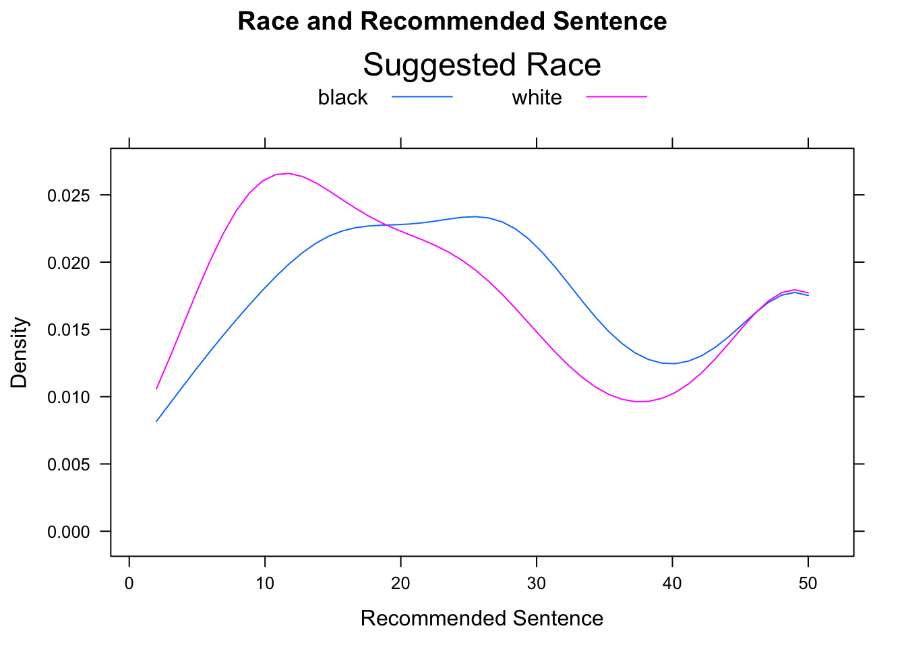

Chapter 12 Appendix: Geek Notes
12.1 Chapter 2
12.1.1 More on Structure
Everything in R is an object. Every object has a structure. In FDN 111 , we learn that the structure of an object consists of its parts and the way that the parts relate together. R can show us the structure of an object using the str function. We have already seen this for data frames:
str(m111survey)## 'data.frame': 71 obs. of 12 variables:
## $ height : num 76 74 64 62 72 70.8 70 79 59 67 ...
## $ ideal_ht : num 78 76 NA 65 72 NA 72 76 61 67 ...
## $ sleep : num 9.5 7 9 7 8 10 4 6 7 7 ...
## $ fastest : int 119 110 85 100 95 100 85 160 90 90 ...
## $ weight_feel : Factor w/ 3 levels "1_underweight",..: 1 2 2 1 1 3 2 2 2 3 ...
## $ love_first : Factor w/ 2 levels "no","yes": 1 1 1 1 1 1 1 1 1 1 ...
## $ extra_life : Factor w/ 2 levels "no","yes": 2 2 1 1 2 1 2 2 2 1 ...
## $ seat : Factor w/ 3 levels "1_front","2_middle",..: 1 2 2 1 3 1 1 3 3 2 ...
## $ GPA : num 3.56 2.5 3.8 3.5 3.2 3.1 3.68 2.7 2.8 NA ...
## $ enough_Sleep : Factor w/ 2 levels "no","yes": 1 1 1 1 1 2 1 2 1 2 ...
## $ sex : Factor w/ 2 levels "female","male": 2 2 1 1 2 2 2 2 1 1 ...
## $ diff.ideal.act.: num 2 2 NA 3 0 NA 2 -3 2 0 ...The parts of a data frame are the variables. The way they relate together to make an actual data frame is that all have the same length (71 in this case). This allows R to combine the variable in columns, and to interpret the rows as individuals.
You can think of a data frame as being like a book. The “chapters” of the book are the variables.
If a data frame is like a book, then a package, such as tigerstats, is a like collection of books. The authors of R must take this analogy pretty seriously, because one way to load is package is as follows:
library(tigerstats)The library() function takes all of the books in tigerstats out of storage and puts them on the shelves of R’s library.
Just like you, R is a reader, so R reads for structure, too. Look at the following code (and see Figure [A Simple Histogram] for the results):
histogram(~fastest, data=m111survey)Figure 12.1: A Simple Histogram.
You can think of the code as saying to R: “Put on your histogram() glasses. Then take up the book named m111survey, turn to chapter fastest, and read that chapter with your histogram() glasses.”
When R gets interprets that code, it “reads” fastest with histogram glasses. It can do so because of the structure of fastest:
str(m111survey$fastest)## int [1:71] 119 110 85 100 95 100 85 160 90 90 ...R sees that is fastest is a numerical vector. It can use histogram glasses to read that vector and produce the histogram you see on the screen.
Suppose you were to ask R to make a histogram of sex. The result appears in Figure [Bad Histogram].
histogram(~sex,data=m111survey)## Warning in mean.default(eval(formula[[2]], data, .envir), ...): argument is
## not numeric or logical: returning NA## Warning in var(if (is.vector(x) || is.factor(x)) x else as.double(x), na.rm = na.rm): Calling var(x) on a factor x is deprecated and will become an error.
## Use something like 'all(duplicated(x)[-1L])' to test for a constant vector.Figure 12.2: Bad Histogram. You should not try to make a histogram from a factor variable.
You don’t get a histogram; you get something that looks like a cross between a density histrogram and a barchart. R was programmed to look at the structure of the input variable. If it’s a factor rather than a numerical vector and a histogram was requested, then R looks turns the factor into a numerical variable, as best it can. In this case, “female” was turned into a 1 and “male” was turned into a 2. The rectangle over female extends from 0.5 to 1.5, and the recangle over “male” extends from 1.5 to 2.5 Very kindly, R prints the values “female” and “male”, rather than 1 and 2, so it’s doing the best it can to give you a pair of “glasses” through which you can read the data.
We said that everything in R is an object, and every object has a structure. Therefore, even graphs have a structure. Try this:
FastHist <- histogram(~fastest,data=m111survey,
main="Fastest Speed Ever Driven",
xlab="speed in mph",
type="density")Where’s the graph? Well, we didn’t ask for it to go the screen; instead we asked for it to be stored as an object named FastHist. Let’s look at the structure of the object:
str(FastHist)Run the chunk above. It’s an enormous list (of 45 items). When you look through it, you see that it appears to contains the information need to build a histogram.
The “building” occurs when we `print() the object:
print(FastHist)Figure 12.3: Now we get the histogram.
The print() function uses the information in FastHist to produce the histogram you see on in Figure [Now we get the histogram]. (When you ask for a histogram directly, you are actually asking R to print the histogram object created by the histogram() function.)
Of course when we read a histogram, we usually read the one we see on the screen, so we think of its structure differently than R does. In general, we think of the structure of a graph as:
- the axes
- the panel (the part that is enclosed by the axes)
- the annotations (title, axis labels, legend, etc.)
12.1.2 Fancier Histograms
In a density histogram, it can make a lot of sense to let the rectangles have different widths. For example, look at the tornado damage amounts in tornado:
histogram(~damage,data=tornado,
main="Average Annual Tornado\nDamage, by State",
xlab="Damage in Millions of Dollars",
type="density")Figure 12.4: Tornado damge, with default breaks. All rectangles have the same width.
The distribution (see Figure [Tornado damge, with default breaks]) is very right-skewed, but most of the states suffered very little damage. Let’s get a finer-grained picture of these states by picking our own breaks:
data(tornado)
histogram(~damage,data=tornado,
main="Average Annual Tornado\nDamage, by State",
xlab="Damage in Millions of Dollars",
type="density",
breaks=c(0,2,4,6,10,15,20,25,30,40,50,60,70,80,90,100))Figure 12.5: Tornado damage, with customized rectangles.
Figure [Tornado damage, with customized rectangles] shows the result. You should play around with the sequence of breaks, to find one that “tells the story” of the data well.
12.1.3 Combined Plots
If you would like to make violin plot combined with a box-and-whisker plot, here is how to do it:
bwplot(GPA~seat,data=m111survey,
main="Grade Point Average,\nby Seating Preference",
xlab="Seating Preference",
ylab="GPA",
panel = function(box.ratio,...) {
panel.violin(..., col = "bisque",
from=0,to=4)
panel.bwplot(..., box.ratio = 0.1)
})Figure 12.6: Combined Plot. Box-and-Whisker plots combined with violin plots are very cool.
The result is shown in Figure [Combined Plot].
In order to get more than one graph into the “panel” area of a plot, you modify something called the “panel” function. In advanced courses (or own your own) you canlearn more about how R’s graphics systems work, but for now just try copying and modifying the code you see in the Course Notes.
12.1.4 Adding Rugs
Adding the argument panel.rug to the panel function gives a “rug” of individual data values along the x-axis.
bwplot(~damage,data=tornado,
main="Average Annual Tornado\nDamage, by State",
xlab="Damage in Millions of Dollars",
panel=function(x,...) {
panel.violin(x,col="bisque",...)
panel.bwplot(x,...)
panel.rug(x,col="red",...)
}
)Figure 12.7: Damage with Rug. We added a ‘rug’ to this plot.
The result appears in Figure [Damage with Rug].
12.1.5 Tuning Density Plots
Adding a list of density arguments fine tunes features of the density plot. For example, bw specifies how “wiggly” the plot will be; from and to tell R where to begin and end estimation of the density curve.
Here is an example of what can be done (see Figure [Setting Bandwidth] for the results):
histogram(~damage,data=tornado,
main="Average Annual Tornado\nDamage, by State",
xlab="Damage in Millions of Dollars",
type="density",
breaks=c(0,2,4,6,10,15,20,25,30,40,50,60,70,80,90,100),
panel=function(x,...) {
panel.histogram(x,...)
panel.rug(x,col="red",...)
panel.densityplot(x,col="blue",
darg=list(bw=3,from=0,to=100),...)
}
)Figure 12.8: Setting Bandwidth. The bandwidth of the density plot was set to 3.
R constructs a density plot by combining lots of little bell-shaped curves (called kernals), one centered at each point in the data. The bandwidth bw tells R how spread out these kernals should be: the bigger the bandwidth, the shorter and wider the kernal, and the stiffer the density curve will be. With a small bandwidth, the kernals are skinny and tall, giving the density plot a wiggly appearance, especially near isolated data points.
How do you know what the bandwidth should be? For now, you just have to try various values. The following manipulate() app helps you experiment with different values of the bandwidth.
require(manipulate)
manipulate(
bandwidth=slider(0.5,20,init=5,label="Bandwidth (1 = wiggly, 20 = stiff)"),
histogram(~damage,data=tornado,
main="Average Annual Tornado\nDamage, by State",
xlab="Damage in Millions of Dollars",
type="density",
breaks=c(0,2,4,6,10,15,20,25,30,40,50,60,70,80,90,100),
panel=function(x,...) {
panel.histogram(x,...)
panel.rug(x,col="red",...)
panel.densityplot(x,col="blue",
darg=list(bw=bandwidth,from=0,to=100),...)
}
)
)When the bandwidth is set too low, the wiggles in the density plot are too sensitive to chance clusters of data points – clusters that probably would not appear in the same place in a repeated study. When the bandwidth is set too high, the density plot is not able to capture the overall shape of the distribution.
12.1.6 More on Standard Deviation
Recall that when we compute the sample standard deviation, we don’t quite average the squared deviations. Instead, we divide by one less than the number of data values:
\[s = \sqrt{(\sum{(x_i - \bar{x})^2})/(n-1)}.\]
What if we have the entire population? Then the SD is called \(\sigma\), and it is computed like this:
\[\sigma = \sqrt{(\sum{(x_i - \mu)^2})/N},\]
where \(\mu\) is the mean of the population and \(N\) is the number of individuals in the population. So you might well ask: “Why do we divide by one less than the number of items when we have a sample, but not when we have the entire population?”
To answer this, we first have to back up to the idea of variance. The sample variance is:
\[s^2 = \frac{\sum{(x_i - \bar{x})^2}} {n-1},\]
and the population variance is
\[\sigma^2 = \frac{\sum{(x_i - \mu)^2}} {N}.\]
The formula for the population variance makes perfect sense. Although the \(n-1\) in the formula for sample variance does not appear to make good sense, it has been cleverly designed so that the sample variance will be a good estimate of the population variance.
What do we mean by “good estimate”? Let’s suppose that a statistician wants to estimate the variance of the heights of imagpop, but she only has time to take a sample of size, say, \(n=4\). Unknown to her the population variance is:
sigmasq <- var(imagpop$height)*(9999/10000)
sigmasq## [1] 15.26323Her sample might, on the other hand, might look like this:
HerSamp <- popsamp(n=4,pop=imagpop)
HerSamp## sex math income cappun height idealheight diff kkardashtemp
## 8248 female no 71800 oppose 69.9 71 1.1 11
## 3223 male no 18700 oppose 73.4 76 2.6 99
## 8173 female no 2500 oppose 66.2 67 0.8 18
## 9448 male no 76700 oppose 73.4 76 2.6 94Then her estimate of the variance would be
var(HerSamp$height)## [1] 11.8225Her estimate might be high or low: it depends on the luck of the draw. But suppose that many, many statisticians (10,000 of them, let’s say) were to each take a random sample of size 4 and compute the sample variance. Then the results would be like this:
SimVars <- do(10000)*var(popsamp(n=4,pop=imagpop)$height)Individually, their estimates would be all over the place (see Figure[Variance Estimates] for the plot:
head(SimVars,n=10)## var
## 1 31.735833
## 2 19.649167
## 3 11.610000
## 4 13.396667
## 5 5.556667
## 6 2.082500
## 7 20.349167
## 8 32.630000
## 9 19.780000
## 10 6.842500histogram(~SimVars$var)Figure 12.9: Variance Estimates.
But on average, they would get:
mean(SimVars$var)## [1] 15.28448Notice that this about the same as the population variance \(\sigma^2 = 15.2632308\).
On average, over many, many samples, the sample variance equals the population variance. We say that the sample variance is an unbiased estimator of the population variance. On the other hand, if the statisticians were to compute the sample variance by dividing by \(n=4\) instead of dividing by \(n-1=3\), then they would get results that are, on average, too small:
BadVars <- SimVars$result*3/4 #so that there is now a 4 on the bottom
mean(BadVars)## [1] NaNSure enough, the results, on average are only about 3/4th the size of the true \(\sigma^2\). Dividing by \(n\) in the sample variance would give you a biased estimator of population variance!
12.1.7 Cleveland Dotplots
Barcharts are very popular for investigating categorical variables, but modern statisticians believe that the Cleveland dot plot is more useful in most situations.
SexSeatrp <-100*prop.table(xtabs(~seat+sex,data=m111survey),margin=1)
dotplot(SexSeatrp,groups=FALSE,horizontal=FALSE,type=c("p","h"),
ylab="Percent",xlab="Feeling About Weight",
main="Feeling About Weight, by Sex")Figure 12.10: Cleveland Plot.
The resulting plot appears as Figure [Cleveland Plot]. The first line of code above constructs a twoway table and computes row percentages for it, using the prop.table() function to prevent having to deal with the extraneous column of total percentages. Note that in the twoway table the explanatory variable comes second. Reverse the order to see the effect on the layout of the plot.
The second line constructs the dot plot itself. Whereas barcharts indicate percentages by the tops of rectangles, the Cleveland dot plot uses points. Setting the type argument to c("p","h") indicates that we want points, but also lines extending to the points. The lines are helpful, as the human eye is good at comparing relative lengths of side-by-side segments. The groups argument is FALSE by default; we include it here to emphasize how the plot will change when it is set to TRUE, as in the next example. The results appears in Figure [Cleveland Plot 2].
dotplot(SexSeatrp,groups=TRUE,horizontal=FALSE,type=c("p","o"),
ylab="Proportion",xlab="Feeling About Weight",
auto.key=list(space="right",title="Sex",lines=TRUE),
main="Feeling About Weight, by Sex")Figure 12.11: Cleveland Plot 2. We added lines extending to the dots.
Setting groups to TRUE puts both sexes in the same panel. Setting type=c("p","o") produces the points, with points in the same group connected by line segments. The lines argument in auto.key calls for lines as well as points to appear in the legend.
12.2 Chapter 3
12.2.1 Fixed and Random effects in Simulation
When we used the ChisqSimSlow apps during the ledgejump study, we set the effects argument to “fixed.” Later on, in the sex and seat study, we set effects to “random”. What was all that about?
Try the ChisqSimSlow app in the ledgejump study again, and this time pay careful attention to each twoway table as it appears.
require(manipulate)
ChisqSimSlow(~weather+crowd.behavior,data=ledgejump, effects="fixed")Now try it again, but this time with effects set to “random”:
require(manipulate)
ChisqSimSlow(~weather+crowd.behavior,data=ledgejump, effects="random")You might notice that when effects are fixed, the number of cool-weather days is always 9, and the number of warm-weather days is always 12, just as in the original data. On the other hand, when effects are random, although the total number of incidents stays constant at 21, the division of them into cool and warm days varies from one resample to another.
In the ledgejump study, the 21 incidents could not reasonably be regarded as a random sample from some larger “population” of incidents. Most likely, the researcher included in his study all of the incidents for which he could determine the relevant information about weather and crowd behavior. This isn’t a random sample from among all incidents. Therefore, there is no randomness involved in how many warm-weather and how many cool-weather incidents were involved: if we could go back in time and watch these incidents play out again, 9 of them would still have been in warm weather, and 12 would have been in cool weather.
But chance is still involved: in the determination of the value of the response variable. In each incident, factors not associated with the random variable are at play. Such factors – the personalities of the people in the crowd, the length of time the would-be jumper stood on the ledge, etc. – are modeled as “chance” and these chance factors help determine whether the crowd is baiting or polite. Recall that if weather and crowd behavior were unrelated, then our best guess was that for each incident there was a 52.4% chance that the crowd would be polite and a 47.6% chance that it would be baiting. In the resampling with fixed effects, there are 9 cool-weather incidents and 12 warm-weather ones, and each incident is given a 52.4% chance to have a polite crowd.
On the other hand, if our twoway table is based on a random sample from a larger population, as the sex and seat study was, then we say that the effects are random. In the original sex-seat sample, there were 71 individuals: 40 females and 31 males. If we were to repeat the sample again, we would not be guaranteed to have 40 females and 31 males in it. Our best guess, though, based on our sample, is that \(\frac{40}{71} \times 100 = 56.3\)% of the population is female, so in the resampling with random effects, we give each individual a 56.3% chance to be female. Since the resampling is done under the hypothesis that sex and seat are related, the chances for each resample-individual to prefer front, back and middle are the same, regardless of whether the individual is female or male.
Just as the two methods of resampling differ mathematically, so they also differ in the nature and scope of our conclusion in Step Five. In the ledgejump study, fixed effects resampling models the assumption that the 21 incidents themselves would have been the same from sample to sample: the only thing that varies with chance is how the crowd behaves in each incident. Hence your conclusion in Step Five – that the sample data don’t quite provide strong evidence for a relationship between weather and crowd behavior – applies only to those 21 incidents. In the sex and seat study, on the other hand, the random-effects resampling method models the assumption that the the 71 GC students were a random sample from the larger population of all GC students. The conclusions we draw from this data apply to this larger population.
When we set simulate.p.value to TRUE in chisq.testGC, R does resampling. However, it takes a third approach: the the row sums (tallies of the various values of the X variable) are fixed, as in our fixed effects, but the column sums are also fixed to be the same as the column sums of the original data. In our terminology, you could say the resampling is “double-fixed.” R has its own reasons for the double-fixed approach that we will not cover here.
If you want to fixed effects simulations, just use set the simulate.p.value argument in chisq.testGC() to “fixed”. For random effects, set the argument to “random”.
Be assured that, as sample size increases, all three methods — fixed, random and double-fixed — yield approximations that agree more and more nearly with each other. At small sample sizes, though, they can differ by a few percentage points.
Note to Instructors: Our use of the terms “fixed effects” and “random effects” is not quite standard, but is analogous to the use of these terms in mixed-effects linear modeling.
12.3 Chapter 4
12.3.1 Point Shapes in Scatterplots using pch
The plot character, pch, is an integer between 1 and 25 that controls how the points on your scatterplot appear. A summary can be seen in Figure[Plot Characters].
Figure 12.12: Plot Characters.
12.3.2 Scatterplot Matrix
Given several numerical variables, R can produce a group of scatterplots, one for each pair of variables – all in one graph. Such a graph is called a scatterplot matrix. We can create a matrix of scatterplots using the following pairs function in R. You only need to enter in the variables that you want plotted and the dataset that contains them. R will create a square matrix of plots for every combination of variables. See FigureScatterplot Matrix.
pairs(~height+sleep+GPA+fastest,data=m111survey) Figure 12.13: Scatterplot Matrix.
Of course, you can always make this look nicer by changing the colors and plot characters. Notice that the scatterplots are arranged in a somewhat symmetric way across the main diagonal (the boxes with the variable names). A scatterplots mirror image uses the same variables, but the explanatory and response variables are reversed.
You can also plot only the upper (or lower) panels. See Figure[Upper Panel] and Figure[LowerPanel].
pairs(~height+sleep+GPA+fastest,data=m111survey,pch=19,col="red",lower.panel=NULL)Figure 12.14: Upper Panel. Scatterplot matrix showing only the upper panel of scatterplots.
pairs(~height+sleep+GPA+fastest,data=m111survey,pch=19,col="red",upper.panel=NULL)Figure 12.15: Lower Panel. Scatterplot matrix showing only the lower panel of scatterplots.
12.3.3 The Rationale for Values of the Correlation Coefficient, \(r\)
Let’s consider why variables with a positive linear association also have a positive correlation coefficient, \(r\). Consider what value of \(r\) you might expect for positively correlated variables. Let’s recall how we plotted the two “mean” lines to break a scatterplot into four “boxes”. See Figure[Four Boxes].
Figure 12.16: Four Boxes. Scatterplot of Right Handspan (cm) versus Height (in). The lines marking the mean of the handspans and the mean of the heights have been plotted to break the scatterplot into four boxes.
We’ve looked at this scatterplot before, and determined that it indicates a positive association between RtSpan and Height. Now, let’s think carefully about how the points in the scatterplot contribute to the value of \(r\). Check out the formula again:
\[ r=\frac{1}{n-1}\sum{\bigg(\frac{x_i-\bar{x}}{s_x}\bigg)\bigg(\frac{y_i-\bar{y}}{s_y}\bigg)} \]
When an \(x\)-value lies above the mean of the \(x\)’s, it’s \(z\)-score is positive. Likewise, a \(y\)-value that lies above the mean of the \(y\)’s has a positive \(z\)-score. Every ordered pair in the upper right box has an \(x\) and \(y\)-coordinate with positive \(z\)-scores. Multiplying 2 positive \(z\)-scores together gives us a positive number. So, every point in the upper right box contributes a positive number to the sum in the formula for \(r\).
When an \(x\)-value lies below the mean of the \(x\)’s, it’s \(z\)-score is negative. Likewise for \(y\). Every ordered pair in the lower right box has an \(x\) and \(y\)-coordinate with negative \(z\)-scores. Multiplying 2 negative \(z\)-scores together gives us a positive number. So, every point in the lower left box has a positive contribution to the value of \(r\).
Following the same rationale, the points in the upper left box and lower right box will contribute negative numbers to the sum of \(r\).
When an \(x\)-value lies above the mean of the \(x\)’s, it’s \(z\)-score is positive. A \(y\)-value that lies below the mean of the \(y\)’s has a negative \(z\)-score. Every ordered pair in the lower right box has an \(x\)-coordinate with a positive \(z\)-score and a \(y\)-coordinate with a negative \(z\)-score. Multiplying a positive and a negative \(z\)-score together gives us a negative number. So, every point in the lower right box contributes a negative number to the sum in the formula for \(r\).
When an \(x\)-value lies below the mean of the \(x\)’s, it’s \(z\)-score is negative. A \(y\)-value that lies above the mean of the \(y\)’s has a positive \(z\)-score. Every ordered pair in the upper left box has an \(x\)-coordinate with a negative \(z\)-score and a \(y\)-coordinate with a positive \(z\)-score. Multiplying a positive and a negative \(z\)-score together gives us a negative number. So, every point in the upper left box contributes a negative number to the sum in the formula for \(r\).
Since positively associated variables have most of their points in the upper right and lower left boxes, most of the numbers being contributed to the summation are positive. There are some negative numbers contributed from the points in the other boxes, but not nearly as many. When these values are summed, we end up with a positive number for \(r\). So we say that these variables are positively correlated!
In a similar manner, we can argue that since most of the points in a scatterplot of negatively associated variables are located in the upper left and lower right boxes, most of the products being contributed to the sum of \(r\) are negative (with a few positive ones sprinkled in). This gives us a negative number for \(r\). So we say that these variables are negatively correlated!
12.3.4 Computation of the Coefficients in the Regression Equation
The regression equation is \(\hat{y}=a+bx\). You might be wondering: how are \(a\) and \(b\) calculated?
\[\mbox{slope }= b = r \cdot \frac{s_y}{s_x},\] where
- \(r\) is the correlation coefficient,
- \(s_y\) is the SD of the \(y\)’s in the scatterplot, and
- \(s_x\) is the SD of the \(x\)’s in the scatterplot.
\[\mbox{intercept }= a = \bar{y}-b\cdot\bar{x},\] where
- \(b\) is the slope calculated above,
- \(\bar{y}\) is the mean of the \(y\)’s in the scatterplot, and
- \(\bar{x}\) is the mean of the \(x\)’s in the scatterplot.
Before interpreting these formulas, let’s look at a little late 19th century history. Sir Francis Galton, a half-cousin of Charles Darwin, made important contributions to many scientific fields, including biology and statistics. He had a special interest in heredity and how traits are passed from parents to their offspring. He noticed that extreme characteristics in parents are not completely passed on to their children.
Consider how fathers’ heights is related to sons’ heights. See Figure[Galton].
Figure 12.17: Galton. Relationship Between Father and Sons’ Heights
It seems reasonable to think that an average height father would probably have an average height son. So surely our “best fit” line should pass through the point of averages, \((\bar{x},\bar{y})\). See Figure [Point of Averages]
Figure 12.18: Point of Averages. Galton data with the point of averages plotted.
Intuitively, it might also seem that a reasonably tall father, say, 1 standard deviation taller than average would produce a reasonably tall son, also about 1 standard deviation taller than average. The line that would “best fit” this assumption would have slope equal to \(\frac{s_y}{s_x}\).
Figure 12.19: SD Line. Galton Data with SD line
However, this is not the “best fit” line. It does not minimize the Sum of Squares! Check out how the regression line looks in comparison to this standard deviation line.
Figure 12.20: Regression. Galton data with SD line and regression line.
The slope of the SD line is \(b=\frac{s_y}{s_x}\). The slope of the regression line is \(b=r\cdot\frac{s_y}{s_x}\). Since \(r\) is a value between -1 and 1, you can see why this causes the regression line to be more shallow.
This is what is known as the regression effect or regression to the mean. Extremely tall fathers do tend to have taller than average sons, but the sons don’t tend to be as extreme in height as their fathers. Likewise for short fathers.
Check out the following app to explore this idea further!
require(manipulate)
ShallowReg()12.4 Chapter 5
12.4.1 The rbind() Function
The rbind() function combines objects in R by rows. (It is called rbind to stand for “rowbind”.) If you have several lists stored and you want to combine them into one object, you can use rbind.
list1=c(1,2,3)
list2=c(5, 6, 7)
list3=c(100, 200, 300)
rows=rbind(list1,list2,list3)
rows## [,1] [,2] [,3]
## list1 1 2 3
## list2 5 6 7
## list3 100 200 300Essentially, you have created a matrix. You can access objects out of rows similarly to how you would access a value out of a list.
rows[1,2] #gives the number in the 1st row and 2nd column## list1
## 2rows[2,1] #gives the number in the 2nd row and 1st column## list2
## 512.4.2 The cbind() Function
The cbind() function is very similar to rbind(). It combines objects in R by columns. (It is called cbind to stand for “columnbind”.)
columns=cbind(list1,list2,list3)
columns## list1 list2 list3
## [1,] 1 5 100
## [2,] 2 6 200
## [3,] 3 7 300You can use cbind and rbind to combine objects other than numbers, such as characters.
list4=c("A", "B", "C", "D")
list5=c("E", "F", "G", "H")
rows=rbind(list4,list5)
rows## [,1] [,2] [,3] [,4]
## list4 "A" "B" "C" "D"
## list5 "E" "F" "G" "H"columns=cbind(list4,list5)
columns## list4 list5
## [1,] "A" "E"
## [2,] "B" "F"
## [3,] "C" "G"
## [4,] "D" "H"12.5 Chapter 6
12.5.1 The Role of Limits in Density Plots
Recall the grouped density plots, for example:
densityplot(~sentence,data=attitudes,
groups=def.race, plot.points=FALSE,
main="Race and Recommended Sentence",
xlab="Recommended Sentence",
auto.key=list(space="right",title="Suggested\nRace"),
from=2,to=50)Figure 12.21: Race and Sentence. We set limits for the density curves.
The result is shown in Figure [Race and Sentence]. Density plots for different are especially effective when overlaid, because differences in the modes (the “humps”) of the distribution are readily apparent.
In the case of this data, we know that the minimum possible sentence is 2 and the maximum possible is 50. (These limits were specified on the survey forms.) Hence we should communicate these limits to R by means of the from and to arguments. R then constructs the kernel density estimators with these limits in mind.
12.5.2 More about Legends
There are many ways to modify the legend provided by the auto.key argument. These modifications are communicated by setting the values of certain other arguments and combining them in a list. The space argument is set by default to “top”, in which case the legend appears above the graph. It may also be set, to “left”, “right”, or “bottom”. A legend title may also be supplied through the argument title. Finally, settings acolumns` argument controls the layout of the elements in the legend (see Figure [Sentence by Defendant’s Race]:
densityplot(~sentence,data=attitudes,
groups=def.race, plot.points=FALSE,
main="Race and Recommended Sentence",
xlab="Recommended Sentence",
auto.key=list(space="top",title="Suggested Race",columns=2),
from=2,to=50)
12.5.3 More on Strip-plots
Strip-plots are most effective when the groups sizes are small: when groups are large, many data values may equal one another, and overplotting will result. There are some techniques available to alleviate the effects, of over-plotting, though, provided the dataset is not too large. The two primary techniques are jittering and translucence.
See Figure [Sentence by Major] for the result of the following code:
stripplot(sentence~major,data=attitudes,
main="Sentence By Major",xlab="Major",col="red",
jitter.data=TRUE,alpha=0.5,
panel= function(...){
panel.violin(...)
panel.stripplot(...)
})Figure 12.22: Sentence by Major. Strip-plot comined with violin plot.
In the code above, setting the argument jitter.data to TRUE has the effect, in a strip-plot, of moving each point randomly a bit in the direction perpendicular to the axis along which the groups are ordered, thus separating the points from one another. The alpha argument has a default value of 1. When set to a value between 0 and 1, it introduces a degree of translucence to the points. At value 0.5, for example, two over plotted points would appear as dark as a single point would when alpha is set at 1.
12.5.4 Assessing Statistical Significance
Recall that in a randomized experiment, chance is always involved in the collection of the data, simply because it is involved in the assignment of subjects to treatment groups. Thus we can always ask the question of statistical significance. Let’s investigate that question for the Knife-or-Gun study.
When the consent problem restricts us from applying the results of an experiment to a larger population, we think about the problem in terms of the set of subjects themselves. We adopt what is known as the ticket model.
In the ticket model, we imagine that every subject has a magical ticket. Values of the response variable for that subject under the various possible treatments are written on fixed areas of the ticket. In the Knife or Gun study, we imagine that on the left-hand side of the ticket is written the volume of the dying screams he or she would emit, should he or she be killed with a knife. In the right-hand side of the ticket is written the volume of screams he/she would emit if being killed by a gun.
In the ticket model, the question of whether or not the explanatory variable makes a difference in the response variable boils down to what is on these tickets. For a subject with a ticket like
(Knife 65, Gun 65),
the means of slaying makes no difference: she would yell at volume 65 regardless of whether she was killed by knife or by gun. For a subject with a ticket reading
(Knife 70, Gun 67),
the means of slaying makes a difference: being killed by a knife would make her yell louder.
The tickets are truly magical, because researchers are allowed to read at most one part of any person’s ticket. That’s because each subject is assigned to just one treatment group. Competing hypotheses about the effect of the means of slaying on the volume of yells can be stated in terms of the ticket model as follows:
\(H_0\) [Means of slaying makes no difference, on average, for the subjects]: The mean of the Knife-side of the tickets of all subjects equals the mean of the Gun-side of the tickets.
\(H_a\) [On average, dying by gun makes the subjects yell louder]: The mean of the Knife-side of the tickets of all subjects is greater than the mean of the Gun-side of the tickets.
We have stated our hypotheses. That was Step One of a test of significance.
Now for Step Two: computing a test statistic. A reasonable test statistic would be the difference of sample means:
compareMean(volume~means,
data=knifeorgunblock)## Warning: 'compareMean' is deprecated.
## Use 'diffmean' instead.
## See help("Deprecated")## [1] 20.13The difference of means is 20.13, indicating that on average the Knife subjects yelled 20.13 decibels louder than the Gun subjects did.
Next, Step Three: computing the P-value. We would like to know the probability of getting a difference in sample means at least as big as the one we actually got, if \(H_0\) is actually true.
To find this probability we imagine—temporarily and for the sake of argument only—that the NUll is really true. In fact, we’ll make the extra-strong assumption that the Null is super-duper true: that means of slaying makes no difference for ANY subject. In that case, for every the number on the Knife-side equals the number on the Gun-side. If that’s true, then we actually know all of the numbers on all of the tickets. (Reading one side—that, is, killing the subject—tells us what the other side says.)
This neat fact puts us in the happy position of being able to simulate what would happen if we were to repeat the experiment many, many times. We would have the same 20 subjects each time: only the group assignments would differ. But no matter the group assignment, we can tell what each person’s dying screams will be.
For convenience, we’ll write a function that pretends to run the who experiment all over again, with blocking, computing the difference in the mean volumes of yells for each group, each time, and recording the difference:
set.seed(12345)
KnifeGunSim <- do(500)*diffmean(volume~treat.grp,
data=RandomExp(knifeorgunblock,
sizes=c(10,10),groups=c("k","g"),
block="hoghollerer"))Let’s look at the first few simulations::
head(KnifeGunSim,n=5)## diffmean
## 1 3.99
## 2 5.45
## 3 -1.29
## 4 -1.55
## 5 -4.43Remember: these differences are all based on the assumption that means of slaying has no effect at all on the volume of dying screams. So, about how big are the differences, when the Null is right? Let’s see:
favstats(~diffmean,data=KnifeGunSim)## min Q1 median Q3 max mean sd n missing
## -12.71 -3.63 0.1 3.76 15.79 0.16864 5.209671 500 0As you might expect, the typical difference is quite small: about 0, give or take 5.5 or so. The difference we saw in the study (20.13) was about four SDs above what the Null would expect.
In fact, the maximum of the simulated differences was only 12.73: not once in our 500 simulations did the test statistic exceed the value of the test statistic that we got in the actual study.
This gives us Step Four in a test of significance: the P-value is very small, probably less than one in 500, so we reject \(H_0\).
This study provided very strong evidence that, for these 20 subjects, slaying with a knife evokes louder yells than slaying with a gun does.
12.5.5 Interaction
There is one other important concept that often applies in experiments, that wee think bears a leisurely discussion: it is the concept of interaction.
data(ToothGrowth)
View(ToothGrowth)
help(ToothGrowth)bwplot(len~as.factor(dose)|supp,data=ToothGrowth)Figure 12.23: Tooth growth.
Figure [Tooth growth] shows boxplots of the data. In both panels, the boxes rise as you read to the right. Hence, for both values of the explanatory variable supp, the length of tooth increases as dosage (also an explanatory variable) increases. However, the increase in length as dosage of Vitamin c increases from 1 to 2 is greater when the dosage method is by ascorbic acid (VC) than when the Vitamin C is administered in the form of orange juice (OJ). Hence, the effect of *dose on len differs with differing values of the other explanatory variable supp. Because of this difference, the variables dose and supp** are said to be interact. The formal definition follows:
- Interaction
Two explanatory variables \(X_1\) and \(X_2\) are said to interact when the relationship between \(X_1\) and the response variable \(Y\) differs as the values of the other variable \(X_2\) differ.
Practice: In each of the situations below, say whether there is a confounding variable present, or whether there is interaction. In the confounding case, identify the confounding variable and explain why it is a confounder. In the interaction case, identify the two explanatory variables that interact.
(1). In a study of the effect of sports participation and sex on academic performance, it is found that the mean GPA of male athletes is 0.7 points less than the mean GPA of female athletes, but the mean GPA of male non-athletes is only 0.2 points lower than the mean GPA of female non=athletes.
(2). In a study of the effect of alcohol on the risk of cancer, it is found that heavy drinkers get cancer at a higher rate than moderate drinkers do. However, it is known that smokers also tend to drink more than non-smokers, and that smoking causes various forms of cancer.
As another example, consider the pushups data frame:
data(pushups)
View(pushups)
help(pushups)Play with the data using the a Dynamic Trellis app:
require(manipulate)
DtrellScat(pushups~weight|position,data=pushups)The relationship between weight and push-ups varies depending on position: for Skill players the relationship is somewhat positive (the scatterplot rises as you read to the right), but for Skill players the relationship is somewhat negative (scatterplot falls as you move to the right). Thus, variables weight and position appear to interact. One might wonder, though, whether the observed interaction is statistically significant: ater all, there weren’t many Line players in the study to begin with.
12.6 Chapter 8
12.6.1 We Lied About the SD Formulas!
Recall the SimpleRandom app: let’s play with it one more time:
require(manipulate)
SimpleRandom()This time, pick one of the variables and move the slider up to the sample size 10,000. Click on the slider several times, keeping it set at 10,000. Watch the output to the console.
You probably noticed that the sample statistics did not change from sample to sample, and that they were equal to the population parameters every time. This makes sense, because when the sample size is the same as the size of the population, then simple random sampling produces a sample that HAS to be the population, each and every time!
But wait a minute: if the sample statistic is ALWAYS equal to the population parameter, then the likely amount by which the statistic differs from the parameter is ZERO. Hence the SD of the estimator should be zero. Fro example, if we are estimating the mean height of imagpop, then the SD of \(\bar{x}\) should be zero. But the formula we gave for the SD is:
\[\frac{\sigma}{\sqrt{n}}=\frac{\sigma}{\sqrt{10000}}=\frac{\sigma}{100},\]
which has to be BIGGER than zero. Therefore the formula is wrong.
Well, it is wrong for simple random sampling. It is correct for random sampling with replacement form the population. The correct formula for the SD of \(\bar{x}\), when we are taking a simple random sample – sampling without replacement – is:
\[Sd(\bar{x})=\frac{\sigma}{\sqrt{n}} \times \sqrt{\frac{N-n}{N-1}},\]
where \(n\) is the sample size and \(N\) is the size of the population. The quantity
\[\sqrt{\frac{N-n}{N-1}}\]
is called the correction factor.
As you can see, at sample size \(n = 10000\) and population size \(N=10000\) the quantity \(N-n\) will be zero, forcing the correction factor to be zero, and thus forcing the SD of \(\bar{x}\) to be zero as well.
Usually we don’t bother with the correction factor in practice, because usually \(n\) is small in comparison to \(N\). For example, when we take a SRS of size \(n=2500\) from the population of the United States (\(N \approx 312000000\)), then the correction factor is equal to:
N <- 312000000
n <- 2500
CorrFac <- sqrt((N-n)/(N-1))
CorrFac## [1] 0.999996The correction factor is approximately 0.999996,which so close to 1 that it is rounded to one in the Knitted version of this document. We know that multiplying a number by 1, won’t change the original number, so multiplying the “Wrong” SD formula by the correction factor barely changes the number at all.
If you happen to know the population size, however, there is no harm in using the correct SD formula, with the correction factor.
The same correction factor shows up in the correct SD formulas for \(\hat{p}\) and for \(\bar{d}\), and there are correction factors for the SDs of the other two Basic Five parameters, too.
12.6.2 Are We Only Ever Interested in Population Parameters?
We have spent the whole chapter on population parameters and the statistics that we use to estimate them. But are we only ever interested in population parameters? Are statistics never used to estimate anything else?
The quick answer is No, there are times when the number we want to estimate is not a parameter for a population. For example, sometimes we want to estimate a probability:
- If we would like to know the probability \(p\) for a coin to land Heads, then we might toss the coin many times, compute the proportion \(\hat{p}\) of times that the coin landed Heads, and use this to estimate \(p\). We weren’t actually taking a sample, because there isn’t really a “population” of coin tosses to sample from.
- Another example: we often estimate a P-value by simulation. Again the P-value is a number – the probability of getting data as extreme as the data we actually got, if the Null is true – and we estimate it by simulating the study on the computer many times with a set-up in which the Null is true. Here again, we are simulation many times, but not sampling from some “population” of all possible simulations.
When we estimate a probability by simulation, we still call the probability a “parameter”. It’s just not a population parameter.
On the other hand, some problems that do not appear to be about population parameters really are problems about populations parameters, in disguise. A good example would be a question about the relationship between two categorical variables, for example:
Research Question: At Georgetown College, is sex related to seating preference?
We could frame the question about relationship as a question about some populations proportions. Let:
- \(p_{male,front}\) = the proportion of all GC males who prefer to sit in front;
- \(p_{female,front}\) = the proportion of all GC females who prefer to sit in front;
- \(p_{male,middle}\) = the proportion of all GC males who prefer to sit in the middle;
- \(p_{female,middle}\) = the proportion of all GC females who prefer to sit in the middle;
- \(p_{male,back}\) = the proportion of all GC males who prefer to sit in back;
- \(p_{female,back}\) = the proportion of all GC females who prefer to sit in back;
Then someone who believes that sex and seat are unrelated at GC believes three things
- \(p_{male,front} = p_{female,front}\)
- \(p_{male,middle} = p_{female,middle}\)
- \(p_{male,back} = p_{female,back}\)
Someone who thinks that the two variables are related believes that at least one of the three equalities above is incorrect.
12.7 Chapter 9
12.7.1 Distinction Between \(t\) and \(z\) in Confidence Intervals for Means
In order to more fully understand the distinction between using the \(t\)-multiplier (from the \(t\)-distribution) and using the \(z\)-multiplier (from the normal distribution) in the construction of confidence intervals for means, let’s first remind ourselves of the statement of the Central Limit Theorem.
Central Limit Theorem: For any population with a finite mean \(\mu\) and finite standard deviation \(\sigma\), the distribution of the sample mean \(\bar{x}\) gets closer and closer to
\[norm(\mu,\frac{\sigma}{\sqrt{n}})\]
as the sample size \(n\) gets larger and larger.
Now, let’s consider four cases:
Case 1: The population standard deviation, \(\sigma\), is known and the population is normally distributed.
When we know \(\sigma\), we do not have to approximate the SD with the SE in the formula for the confidence interval. In addition, we can find our \(z\)-score = \(\dfrac{\bar{x}-\mu}{\frac{\sigma}{\sqrt{n}}}\) exactly.
Furthermore, if the population from which we are drawing our sample is normal, then our sample estimate, \(\bar{x}\), is also going to exactly follow a normal distribution, regardless of the sample size. This means that the \(z\)-score comes from the normal curve.
So, \(\dfrac{\bar{x}-\mu}{\dfrac{\sigma}{\sqrt{n}}}\) exactly follows a standard normal distribution, regardless of the sample size.
In this situation, the \(z\)-multiplier is actually the correct multiplier to use. However, this situation rarely crops up. It is very unlikely that we would know the distribution of our population and know the population standard deviation.
Case 2: The population standard deviation, \(\sigma\), is known and the population is not normally distributed.
The difference here is that we either don’t know if the population is normally distributed or we know that it is not. For this reason, we would be unable to say that the estimator, \(\bar{x}\), follows a normal distribution. However, the Central Limit Theorem ensures that for large enough sample sizes, \(\bar{x}\) is approximately normally distributed. So, in this case, even though we are not making an approximation to the SD(\(\bar{x}\)) (since we know \(\sigma\)), we are making an approximation when we use a \(z\)-multplier (since we don’t know that \(\bar{x}\) follows a normal distribution exactly).
So, \(\dfrac{\bar{x}-\mu}{\dfrac{\sigma}{\sqrt{n}}}\) approximately follows a standard normal distribution for large sample sizes. The Central Limit Theorem guarantees nothing about small sample sizes.
For this situation, it is still acceptable to use the \(z\)-multiplier as long as your sample is not too small.
Case 3: The population standard deviation, \(\sigma\), is unknown and the population is normally distributed.
For this case, \(\bar{x}\) is normally distributed regardless of the sample size. However, since we do not know \(\sigma\), we must use the \(t\)-multiplier, \(\dfrac{\bar{x}-\mu}{\dfrac{s}{\sqrt{n}}}\), with \(n-1\) degrees of freedom. The numerator of this ratio is normally distributed, but the denominator is not. Since \(s\) is a random variable, the denominator is a random variable. Thus, we have a ratio of two random variables and this has a \(t\) distribution.
So, \(\dfrac{\bar{x}-\mu}{\dfrac{s}{\sqrt{n}}}\) exactly follows a \(t\)- distribution with \(n-1\) degrees of freedom, regardless of the sample size.
For this situation, you should always use the \(t\)-distribution with \(n-1\) degrees of freedom.
Case 4: The population standard deviation, \(\sigma\), is unknown and population is not normally distributed.
Here again, we must rely on the Central Limit Theorem. For large sample sizes, \(\dfrac{\bar{x}-\mu}{\dfrac{s}{\sqrt{n}}}\) will approach a standard normal distribution.
The decision on which multiplier to use for this situation is somewhat ambiguous. For small sample sizes, you can’t do anything without assuming that the population is normally distributed. Even if this assumption is not really correct, the \(t\)-distribution is likely to be approximately right. For large sample sizes, you have the Central Limit Theorem to ensure your assuption of normality. Regardless of whether you decide to use the \(t\) or \(z\)-multiplier, you are still using an approximation. If you use the \(z\)-mutliplier, you are assuming that the sample size is big enough that \(\dfrac{\bar{x}-\mu}{\dfrac{s}{\sqrt{n}}}\) is well approximated by the standard normal distribution, i.e., that the Central Limit Theorem holds. If you use the \(t\)-mutliplier, you are assuming that the population can be well approximated by the normal distribution.
The likelihood of us knowing the real value of \(\sigma\) are slim to none, being that \(\sigma\) is a population parameter. Chances are, we will be dealing with Case 4. We are relying on an assumption for this case, regardless of the multiplier we choose to use. So which one should we choose?
Since the \(t\)-distribution carries more weight in it’s tails than the normal distritbution, the \(t\)-multipliers are always a little bigger than the \(z\)-mutlipliers (for the same confidence level). For this reason, the confidence interval that is calculated using a \(t\)-multiplier will be slightly wider than the confidence interval calculated using the \(z\)-mutliplier. Using the \(t\)-mutliplier makes our confidence interval estimate more conservative. This is one reason why we choose to always stick to using the \(t\)-distribution in the calculation of confidence intervals for means.
12.7.2 How Does R Find \(df\)?
When you are dealing with a situation where you have sampled from two independent populations, degrees of freedom is more difficult to calculate. We can’t just take \(n-1\) because we have two sample sizes, \(n_1\) and \(n_2\). There are different methods for calculating \(df\). One method is to use one less than the smaller of the two sample sizes for the degrees of freedom. In other words, \[df=min(n_1-1,n_2-1).\]
If the standard deviations of the two samples are equal, another method is to use two less than the sum of the two sample sizes for the degrees of freedom. In other words, \[df=n_1+n_2-2.\] In fact, by setting var.equal=TRUE in the ttestGC function, R will use this formula for \(df\).
By default, the function ttestGC in R uses the Welch-Satterthwaite equation to calculate degrees of freedom for the 2 sample test of means.
\[df =\dfrac{\bigg(\dfrac{s_1^2}{n_1}+\dfrac{s_2^2}{n_2}\bigg)^2}{\dfrac{s_1^4}{n_1^2(n_1-1)}+\dfrac{s_2^2}{n_2^2(n_2-1)}}\]
Research Question: Do GC males sleep more at night, on average, than GC females?
The ttestGC function gives us the following:
ttestGC(sleep~sex,data=m111survey)##
##
## Inferential Procedures for the Difference of Two Means mu1-mu2:
## (Welch's Approximation Used for Degrees of Freedom)
## sleep grouped by sex
##
##
## Descriptive Results:
##
## group mean sd n
## female 6.325 1.619 40
## male 6.484 1.557 31
##
##
## Inferential Results:
##
## Estimate of mu1-mu2: -0.1589
## SE(x1.bar - x2.bar): 0.3792
##
## 95% Confidence Interval for mu1-mu2:
##
## lower.bound upper.bound
## -0.915971 0.598229The \(df=\) 65.81. Let’s use the Welch-Satterthwaite equation to verify this.
## sex min Q1 median Q3 max mean sd n missing
## 1 female 2 5 6.75 7.125 9 6.325000 1.619394 40 0
## 2 male 4 5 7.00 7.000 10 6.483871 1.557155 31 0The following statistics will be used in our calculation of \(df\):
\(s_1=\) standard deviation of the females amount of sleep = 6.325.
\(s_2=\) standard deviation of the males amount of sleep = 6.483871.
\(n_1=\) sample size of females = 1.6193937.
\(n_1=\) sample size of females = 1.5571548.
So, \(df=\dfrac{\bigg(\dfrac{s_1^2}{n_1}+\dfrac{s_2^2}{n_2}\bigg)^2}{\dfrac{s_1^4}{n_1^2(n_1-1)}+\dfrac{s_2^2}{n_2^2(n_2-1)}} = \dfrac{\bigg(\dfrac{6.325^2}{1.6193937}+\dfrac{6.483871^2}{1.5571548}\bigg)^2}{\dfrac{6.325^4}{1.6193937^2(1.6193937-1)}+\dfrac{6.483871^4}{1.5571548^2(1.5571548-1)}} =\) 1.1654895 .